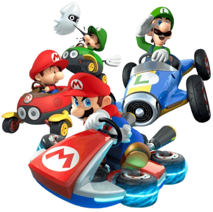

La historia de la serie de juegos Mario Kart comienza en 1992 con el lanzamiento de "Super Mario Kart" para la consola Super Nintendo (SNES). Este juego introdujo a los jugadores a un emocionante mundo de carreras de karts protagonizadas por los personajes icónicos de Nintendo. Los jugadores podían elegir entre Mario, Luigi, Peach y otros personajes mientras competían en una variedad de pistas únicas.  El juego se desarrolla en el Reino Champiñón y presenta a los jugadores la oportunidad de recolectar ítems para ayudarlos en la carrera y luchar contra otros corredores. Además, se incluyeron elementos de estrategia, ya que los jugadores podían deslizarse y utilizar ítems como el Caparazón Rojo y el Caparazón Verde para adelantar a sus oponentes. El éxito de "Super Mario Kart" llevó a la creación de secuelas y spin-offs, como "Mario Kart 64" para la Nintendo 64, "Mario Kart: Double Dash!!" para la Nintendo GameCube, y "Mario Kart DS" para la Nintendo DS. Cada entrega agregó nuevos personajes, pistas y mecánicas de juego, manteniendo la serie fresca y emocionante. Con el lanzamiento de la Wii, llegó "Mario Kart Wii", que introdujo la posibilidad de jugar en línea con amigos y competidores de todo el mundo. Este juego se convirtió en uno de los más populares de la serie y permitió una experiencia de juego multijugador más amplia. "Mario Kart 7" para la Nintendo 3DS permitió a los jugadores personalizar sus karts y deslizarse bajo el agua y volar con alas delta, añadiendo una nueva dimensión a las carreras. Luego, "Mario Kart 8" para la Wii U llevó la serie a nuevas alturas con gráficos HD y una amplia variedad de personajes y pistas. Finalmente, "Mario Kart 8 Deluxe" para la Nintendo Switch reunió lo mejor de las entregas anteriores y agregó nuevos personajes y pistas, convirtiéndolo en el juego de Mario Kart definitivo hasta la fecha. Además, introdujo el Modo Batalla mejorado y la capacidad de llevar dos ítems a la vez, lo que cambió la dinámica de las carreras. A lo largo de los años, la serie Mario Kart ha mantenido su estatus como uno de los juegos de carreras más queridos y populares, y ha seguido siendo una parte fundamental del legado de Nintendo en la industria de los videojuegos. Cada entrega ha construido sobre la base de la original y ha aportado innovaciones que mantienen a los jugadores ansiosos por más aventuras de carreras en el mundo de Mario.